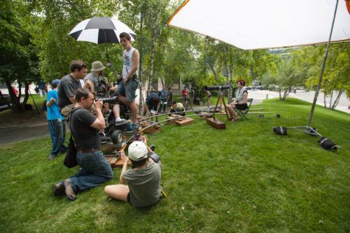

As a filmmaker, we are constantly running into problems on set; no matter how crazy the director’s vision, it’s on the crew to bring it to life. One day while shooting a film with Rich Brauer, he wanted a dolly shot of the lead actress peering through a telescopic camera lens. This would have been a simple task except for one glaring problem: He wanted her on top of a steep knoll! An inexperienced filmmaker at the time, I thought Rich was out of his mind! How on earth are we going to get that 400 lbs dolly to move horizontally on a steep hill?
Rich may have been crazy, but that didn’t matter: it was HIS vision and it was OUR job to figure out how to pull it off. After a little bit of brainstorming, the team had a plan: we would grab all the apple boxes from set and stagger them on the hill so the track could sit flat. To make the tracks as level as possible, we inserted wedges under the slats. Our crazy plan worked and the “impossible” shot was successfully pulled off. Here’s a picture of our creation:
What does this have to do with web design? Just like filmmaking, web design is a process of solving problems creatively - but instead of apple boxes and sandbags we use divs and clearfix. If a client requires something seemingly impossible to pull off I think about that shoot with Rich Brauer I scour StackOverflow and W3schools until I know how it’s done. If the task is truly impossible, I come up with a new way to achieve the client’s goal.
Where there is a will, there is always a way - even if you have to think outside (or on top) the apple box.